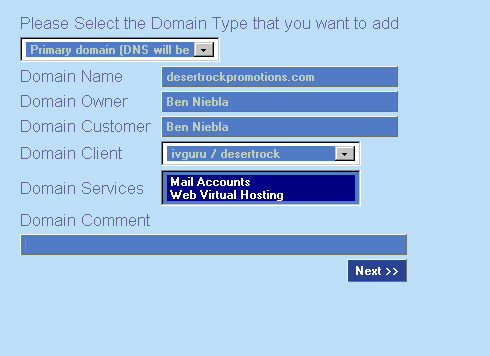
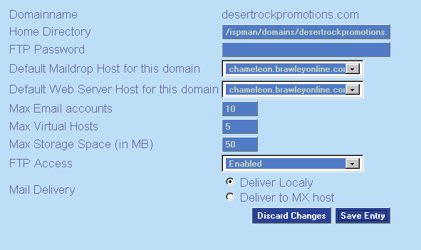

Note to Client: If logging in as a client, you may be able to create your
own domains. Your Reseller or ISP has an option to allow you to create up to a maximum
number of domains. If you can't add a domain, ask your Reseller for
assistance.
- Click on Add Domain, filling out these pieces of info:

Domain Type = primary
* primary - DNS is managed by ISPMan (default)
* secondary - DNS is managed somewhere else and we are a "slave" server
* nodns - ISPMan should not worry about DNS or DNS is hosted elsewhere
* replica - The domain is a copy of another ISPMan domain
TIP: Imagine you just registered customer.org and wanted email and web pages
to mirror what is already setup for customer.com. Make this happen by
choosing Replica Domain when creating customer.org. Then choose customer.com
as the master domain.
Domain Name = customer.com
Domain Owner = Who pays for this
Domain Customer = Who owns the domain
Select the Domain Client from the drop-down menu
Choose the services needed for this domain -- Web, Mail or both.
- Then click Next

Home Directory = Don't touch this unless you have a good reason
FTP Password = allows domain wide FTP access and access to the customer
control pannel.
Max Email accounts = Leave blank, unless this account has a limit.
Max Virtual Hosts = Leave blank, unless this account has a limit.
Max Storage Space = 50 is reasonable
Mail Delivery = MX
NOTE: If email is NOT handled by ISPMan for this domain, be sure the DNS MX
records have the preferred email server(s) listed.
- Click Save Entry
- Setup DNS extras:
Under A:
alias @ to the same IP as www
(useful for making customer.com go to www.customer.com)
- Be sure to click "Commit session" when done.
| Return to Main Help Screen
| |